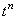
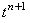
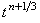
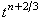
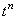
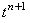
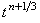
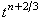

|
Для разрешения неявной разностной схемы (9.4), аппроксимирующей
дифференциальное уравнение (9.1), используется метод дробных шагов, уже рассматривавшийся нами при
изучении методов решения двумерных дифференциальных уравнений параболического типа. Преобразуем
с помощью метода дробных шагов неявную разностную схему (9.4) в схему расщепления.
В случае трёхмерных задач интервал  t
между точками  и  на разностной сетке расщепляется на три равные части;
полученные промежуточные точки обозначим, как  и  (см. рисунок). t
между точками  и  на разностной сетке расщепляется на три равные части;
полученные промежуточные точки обозначим, как  и  (см. рисунок).
На первой трети интервала t записывается
первая подсхема, являющаяся неявной разностной схемой, в которой учитывается только производная второго порядка
по координате x:
На второй трети интервала t
записывается вторая подсхема, являющаяся неявной разностной схемой, в которой учитывается
только производная второго порядка по координате y:
На последней трети интервала t записывается третья подсхема,
являющаяся неявной разностной схемой, в которой учитывается только производная второго порядка по координате z:
Таким образом, схема расщепления для трёхмерного дифференциальные уравнения (9.1) состоит из трёх подсхем
(9.7)-(9.9). Складывая подсхемы (9.7)-(9.9), получаем соотношение, отличающееся от неявной
разностной схемы (9.4) только тем, что вторые производные по координатам x и y аппроксимируются
в нём не на (n + 1)-ом шаге по времени, а в точках (n + 1/3) и (n + 2/3), соответственно:
Данное соотношение показывает, что схема расщепления (9.7)-(9.9) имеет такой же порядок аппроксимации,
как и неявная разностная схема (9.4):
Отметим, что свободный член уравнения (9.1) может быть учтён не в первой подсхеме
схемы расщепления (9.7)-(9.9), а во второй или в третьей; однако в этом случае он будет иметь вид:
|